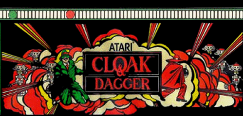
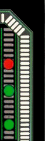
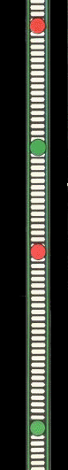
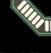
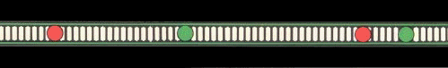

|  |  | |
|
Welcome! Here you will find an abundance of information on the famous "Cloak & Dagger" from fact to fiction, rumor to reality. This site is a work in progress and all links will be active over the coming weeks, plus check back often for constant updates on the work in progress of the completion of the actual home version being completed by the original Atari programmer himself -Dave Comstock.
History - From Agent X to Cloak & Dagger C&D - Atari Arcade Machines Rumors & Myths C&D - The Completion Project (Summary & Status) |
 | |
|  |  | |